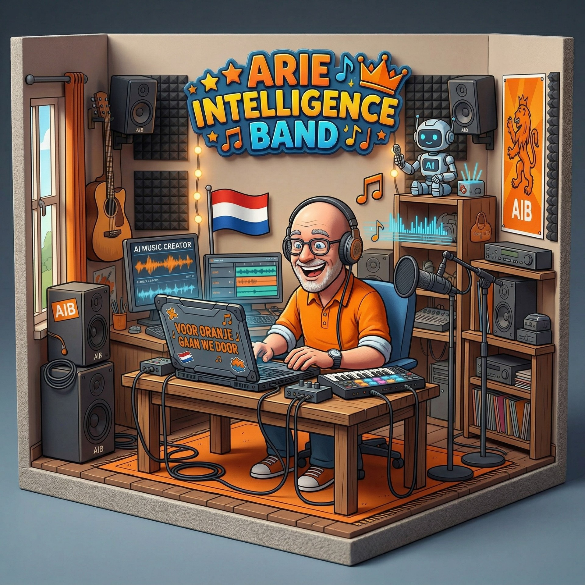

Van meeslepende Nederlandstalige hits tot waanzinnige Oranje knallers voor het EK en WK. Arie maakt muziek met een ziel, gedreven door geavanceerde Artificial Intelligence.

Arie Intelligence (geboren in 1962) heeft door verschillende life events een nieuwe kijk op het leven gekregen. Hij besloot met pensioen te gaan, kocht een camper en trekt inmiddels de wijde wereld in. Deze vrijheid heeft zijn creativiteit volledig aangewakkerd, wat hij nu met passie vertaalt naar muziek.
Zijn missie? Het creëren van de ultieme oorwurm: een melodie of liedje dat ongewild in je hoofd blijft hangen en blijft rondzingen. Samen met de virtuele Arie Intelligence Band en de modernste AI-technologie maakt hij muziek die raakt, verbindt en elk feest onvergetelijk maakt.
AI Gedreven
Oranje Knallers
In de Studio
Ontdek de veelzijdigheid van Arie's tracks. Klik op play om een voorproefje te horen.
Ontdek hoe Arie de brug slaat tussen pure passie en geavanceerde technologie.
Perfecte AI-muziek is zeker geen farce. Het is een echte en snel evoluerende technologie die steeds vaker wordt gebruikt in de professionele muziekwereld. AI kan enorm helpen bij het componeren, produceren en zelfs uitvoeren van muziek van topkwaliteit.
Nee, helemaal niet. Hoewel sommige mensen twijfelen aan de artistieke waarde van door AI gecreëerde muziek, biedt AI juist nieuwe creatieve mogelijkheden. Het is een krachtig innovatief hulpmiddel bedoeld om muzikanten te inspireren en te ondersteunen, en juist om de menselijke creativiteit aan te vullen.
AI fungeert als een tool in de hedendaagse de muziekproductie, en net als bij ambachtelijk geproduceerde muziek blijft de uiteindelijke beleving mensenwerk. Natuurlijk blijft de subjectieve kwaliteit en smaak een belangrijke rol spelen in hoe we met z'n allen deze muziek waarderen. Voor Arie staat voorop dat het raakt, swingt, en van het scherm spat!
Klaar om de volgende hit te maken? Neem contact op met het management van Arie Intelligence.